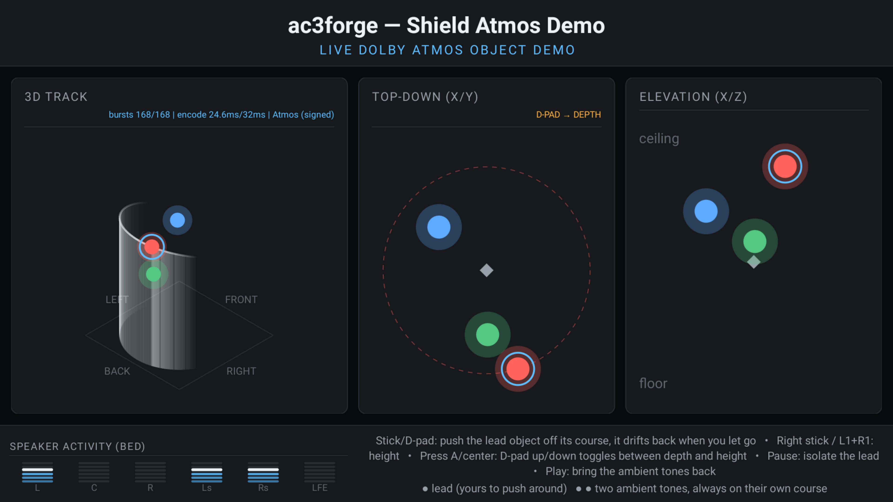
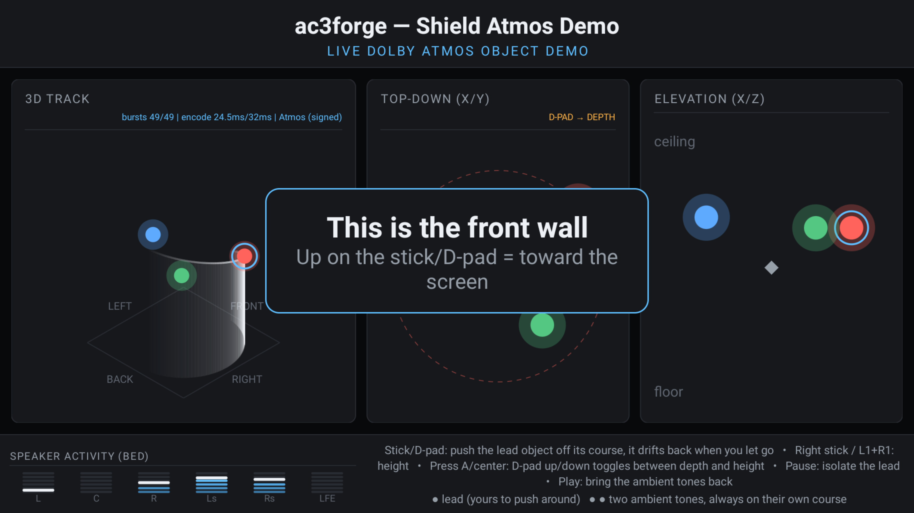
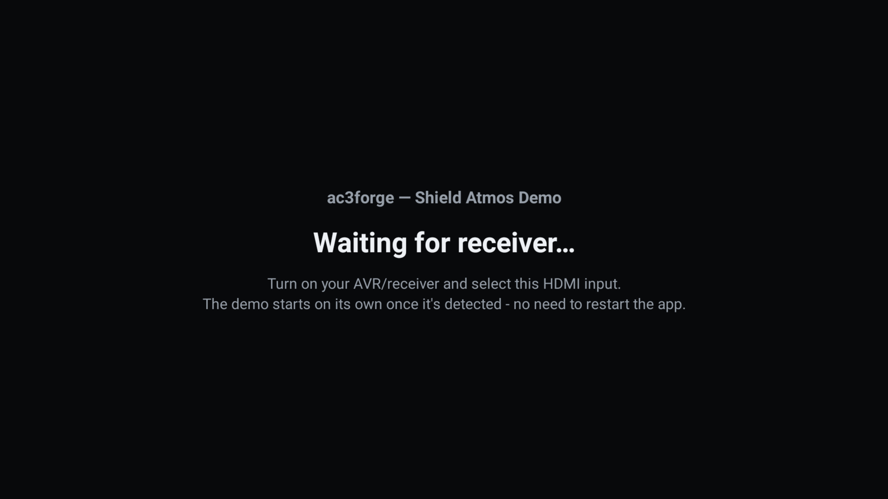

Android (NVIDIA Shield)¶
Android support is a separate, small, Shield-specific demo app, Shield Atmos Demo
(apps/demos/android/), that plays an Atmos/JOC stream out through the Shield's HDMI passthrough
output to an AV receiver, with a controller or remote moving one of a few objects around the
room live. Neither forge nor forge-gui is ported to Android. The app exists to show the
encoder's object audio moving in 3D space on consumer hardware, and is not a general-purpose
encoding tool. This page covers what is specific to Android; for the core library and the desktop
platforms, see Building from source and the other pages in this section.
Status¶
| What runs here | Shield Atmos Demo only. Neither forge nor forge-gui is ported |
| Live Atmos out HDMI passthrough | Confirmed on real 2017 Shield hardware, into an AV receiver |
| Object motion from the controller | Confirmed moving; nobody has listened to check a flyover arrives overhead |
| Capture | None. The app plays; it records nothing |
| AC-4 | None. The app does not decode, encode or play AC-4. The NDK build compiles the AC-4 library and the app links none of it — see AC-4 |
| Distribution | Personal sideload via adb install, never the Play Store. A release carries the APK (every release since v0.3.0-beta.1 has one) |
| CI | The build-android job builds it in the nightly run and in the run after a merge that changes apps/demos/android/; the hardware behaviour is not reproducible in CI |
Android support by variant¶
| Capability | NVIDIA Shield arm64 |
|---|---|
| C++ library | Source confirmed on hardware linked in-tree through the NDK |
| Shield Atmos Demo | Published confirmed on hardware release APK; sideload with adb |
| Forge CLI and GUI | Unavailable not ported |
| Crucible | Unavailable |
| Hearth | Unavailable |
| Atmos encode and HDMI output | Source confirmed on hardware confirmed through an AV receiver |
| AC-4 decode and encode | Source build only the NDK build compiles the AC-4 library; the Shield demo links none of it |
| AC-4 IEC 61937 output | Source build only ENCODING_IEC61937; the demo never sends AC-4; no receiver accepts AC-4 |
| Audio capture | Unavailable playback-only demo |
Distribution is personal sideload only, via adb install — never the Play Store. That is a
deliberate choice, not a placeholder: the app can be built with object signing
enabled, and that build (which carries the key) must never leave the user's own device (see below).

Build and run¶
An Android SDK with NDK 26.1.10909125 and CMake 3.31.6 installed (local.properties →
sdk.dir), plus a Shield TV reachable over the network or USB:
cd apps/demos/android
./gradlew assembleDebug --no-daemon
adb connect <shield-ip>:5555 # if not on USB
adb -s <shield-ip>:5555 install -r app/build/outputs/apk/debug/app-debug.apk
adb -s <shield-ip>:5555 shell am start -n com.iclforge.shield/.MainActivity
Building and running below covers the SDK setup and signed builds.
What's reused, what's new¶
iclforge::ac3 (libs/ac3/) — the codec and AtmosEncoder — and the libraries it links, among them
iclforge::containers::iec61937 for the IEC 61937 framing, are fully platform-independent and are linked into the app unmodified, via a thin wrapper
CMakeLists.txt (apps/demos/android/app/src/main/cpp/CMakeLists.txt) that add_subdirectory()s
the real repo root rather than duplicating its target definitions. iclforge::audio (libs/audio/)
gains its own backend, libs/audio/src/backend/android/, alongside windows/alsa/pipewire/
posix/macos, selected by CMake's own ANDROID variable (set by the NDK toolchain file, a peer check
to the existing WIN32/LINUX/APPLE blocks in libs/audio/CMakeLists.txt) — no #ifdef
anywhere, per the project's
platform-tree convention.
Everything else — the Gradle app shell, the JNI bridge, the live encode loop, input handling, the
room visualization — is new and lives entirely under apps/demos/android/, outside the CMake
project the desktop tools build from.
Toolchain¶
NDK r26.1.10909125, pinned explicitly in app/build.gradle.kts rather than left to "whichever
NDK Gradle resolves" — a build failure should mean something changed, not that a different NDK got
silently picked. CMake 3.31.6 (the closest available match in the SDK manager's package
repository to the root project's declared 3.28...4.3 range; there is no 3.28.x package for
Android). ANDROID_STL=c++_shared — the app's iclforge::ac3/iclforge::audio are static libraries
linked into one shared object (iclforge_jni.so), and a static STL would duplicate global state
(locale, iostream init) if anything else in the process ever pulled in libc++ too.
The r26 pin also reaches into the library itself: r26's bundled libc++ does not implement
<format> at all unless the compiler is invoked with -fexperimental-library, which nothing in
this project's Android build passes. Rather than avoiding formatted output file by file to route
around that, the whole project uses {fmt} — fmt::format/
fmt::print in place of std::format/std::print everywhere — since {fmt} has no
such gap (see cmake/Fmt.cmake and CONTRIBUTING.md's code-conventions section). That single
choice is also what lets iclforge::containers::mp4's HLS/DASH signaling helpers build for Android at all; see the
note in apps/demos/android/app/src/main/cpp/CMakeLists.txt for why this app still doesn't link them
regardless (it never muxes a file).
The same libc++ implements only <charconv>'s integer from_chars, not its floating-point
overloads — a gap {fmt} does not close, since {fmt} only formats text out, the same direction
std::format goes. Library code that has to turn text into a double therefore uses strtod
instead (libs/ac3/src/encoder/plan.cpp, encoder/assignment.cpp,
libs/objects/src/scene_text.hpp, which also serves the object-scene file formats' parsing —
the write side of that same file goes through fmt::format, like everything else, once {fmt}
made that safe). The macOS wheel's own deployment target has the identical from_chars gap
('from_chars' is unavailable: introduced in macOS 26.0) — {fmt}'s own vendored formatting avoids
the matching to_chars gap there ('to_chars' is unavailable: introduced in macOS 13.3) that a
raw std::format call would hit — so this leg and Build wheels (macos-latest) are the two
that catch a parsing regression; a formatting one shows up everywhere, same as any other
compile error.
minSdk = 26 (Oreo) is a hard floor, not a target: monitor.cpp depends on AAudio outright, which
does not exist below API 26, and there is no fallback path. Real Shield TV hardware (2017 model
onward) ships well above this. Only arm64-v8a is built for a device — every real Shield TV is
arm64, and building the other ABIs would only slow local iteration for targets that can never run
the app. The debug build type also builds x86_64, for the emulator the CI tests run on (see
Automated in CI); the release build is arm64-v8a only.
Audio backend: AAudio for monitor, JNI-bridged AudioTrack for passthrough¶
The original plan for this app was "native AAudio engine … using the existing IEC 61937 encapsulation" throughout. That premise turned out to be only half right, and is worth stating explicitly so it is not rediscovered:
AAudio has no compressed/bitstream passthrough support at all
The NDK's AAudio API is PCM-only — confirmed against Oboe's own maintainers' guidance, not
assumed. There is no AAudio call that hands a pre-framed IEC 61937 burst to an HDMI output and
asks the receiver to decode it as Dolby Digital/Digital Plus. Every real Android passthrough
implementation — Kodi's AESinkAUDIOTRACK.cpp, ExoPlayer's passthrough path — bypasses any
native/codec API entirely and writes encoded, already-wrapped bursts into a Java
android.media.AudioTrack, opened with a compressed encoding
(AudioFormat.ENCODING_E_AC3/ENCODING_IEC61937 — see below). This app does the same thing,
just with a modern zero-copy JNI bridge instead of Kodi's older heap-array wrap.
AMediaCodec (the NDK's native codec API) was considered and rejected for the same reason: it
is a decode/encode pipeline API, with no mode for "inject an already-encoded bitstream
verbatim onto passthrough output."
So the backend is split, unlike the other three:
monitor.cpp— real AAudio (AAudioStreamBuilder, PCM float), for local preview. This is exactly what AAudio is good at, and the only place in this backend that uses it.passthrough.cpp— a JNI shim implementingiclforge::audio::PassthroughSink.submit()hands each burst to a Kotlin-ownedAudioTrackvia a small round-robin pool of buffers wrapped once withenv->NewDirectByteBuffer(...)and promoted to aGlobalRefat startup — onememcpyinto a native buffer per burst, zero further copies, no per-frameNewDirectByteBuffer/GC churn. Kotlin'sPassthroughBridge.ktopens theAudioTrackwithENCODING_IEC61937(bursts arrive already framed —ENCODING_E_AC3would make Android re-wrap already-wrapped frames) and writes withWRITE_BLOCKING.capture.cpp— a no-op stub, mirroring theposixbackend's "no backend" shape. This app has no microphone/loopback feature to serve.audio_backend.cpp— reportscapture.available=falseunconditionally;passthroughandmonitoravailability come from a one-time capability probe at startup (AudioTrack.isDirectPlaybackSupported/isPcmSupported, called separately per format since AC-3 and E-AC-3 need different carrier rates — seecarrier_rate()inandroid_support.hpp), not from a static claim.sink_capabilities.cpp— reportskNoBackend.AudioTrack's ownisDirectPlaybackSupported/isPcmSupportedabove already answer the "does this sink accept this format" question this app needs, and there is exactly one addressable output route on this hardware (android_support.hpp'smake_render_device_info()), so a second, lower-level path to the sink's raw EDID would not add anything the existing probe does not already give — see Linux for where that read is real.
AC-4¶
The app does nothing with AC-4. Its native library, iclforge_jni, links iclforge::ac3 (with
its object signer) and iclforge::audio and not the AC-4 library
(libs/ac4). The wrapper CMakeLists.txt leaves ICLFORGE_BUILD_AC4 at its
default, on, so the NDK build compiles the library and holds its sources to building under
NDK r26 (tools/checks/test_ac4_build_configurations.py holds it to that default), and nothing
calls them. The live encode loop makes E-AC-3 only. The play_file diagnostic (below) replays
E-AC-3 files only, and refuses a file that does not open with an AC-3 or E-AC-3 syncframe, an
AC-4 file included. The app never asks the passthrough sink for AC-4.
What the library under it can do is a separate matter. AC-4 (IEC 61937-14) would go through the
same track. ENCODING_IEC61937 takes the bursts as opaque two-channel data, whatever codec they
hold, so PassthroughSink sends AC-4 on a track at the content rate, the one AC-3 uses, and AC-4
HBR4 on the four-times track E-AC-3 uses. An AC-4 burst is as long as its frame, so submit()
takes any whole number of link frames up to the longest. AC-4 HBR16, whose link has eight
channels, is refused with kUnsupportedFormat. supports_ac4_passthrough takes the AC-3 probe's
answer, since the track is the same one. No receiver found so far decodes AC-4, and this path has
been compiled but never run on a device.
Diagnostic file replay¶
am start ... --es play_file /sdcard/Download/<file>.ec3 skips the live cursor and the demo and
streams that already-encoded E-AC-3 file through the same PassthroughSink
(apps/demos/android/app/src/main/cpp/file_replay.cpp). It exists to separate "is this app's
AudioTrack passthrough configuration right" from "is this project's own Atmos output right":
a known-good commercial Dolby stream either lights the receiver's Atmos indicator through this
code path or it does not. It groups access units by each frame's bsid rather than by
iclforge::ac3::split_access_units, for the reason the file's header gives, and it ends after five seconds
in which the sink accepts nothing.
Partial AudioTrack writes are resumed from, not restarted¶
PassthroughSink::submit treated a short but non-negative AudioTrack.write as a plain failure,
so the caller's retry loop resubmitted the whole burst — the bytes the track had already
accepted went out a second time, splicing a corrupt IEC 61937 burst into the stream (a receiver
answers that with a mute or a glitch, not anything traceable). The excuse in the old comment —
that the short write "cannot happen because that space is inspected by the Kotlin side before
calling write" — didn't hold: PassthroughBridge.submit calls write directly with no such
inspection, and WRITE_NON_BLOCKING is documented to queue only as much as fits. The sink now
remembers how much of the current burst is already queued and offers only the remainder on the
next attempt — entirely inside the sink, no JNI signature change.
Lifecycle: the stream stops when the demo leaves the screen¶
The encode loop used to stop only in onDestroy. Pressing HOME therefore left a cached process
pushing E-AC-3 bursts into the receiver indefinitely — no UI, no notification, nothing to stop it
short of force-stopping the app, and an AVR still locked to a bitstream nothing on screen accounted
for. It now stops in MainActivity.onStop.
onStop, not onPause, and the distinction is load-bearing: AboutActivity is a full-screen
Activity of this same app, and pausing for it must not tear down the AudioTrack and force the
receiver to re-lock — a visible dropout and a bounce back through the waiting interstitial —
because someone read the About screen for four seconds. A launchingOwnActivity flag carries that
intent across the stop, and isChangingConfigurations covers recreation for the same reason.
Both Choreographer render loops (RoomView, ChannelMeterView) are gated on window
visibility, not attachment. Attachment does not change when another Activity comes forward, so an
onAttachedToWindow-only gate kept an invalidate-per-vsync loop — and the per-frame JNI calls in
onDraw — running behind whatever was on screen. A tickerRunning flag keeps the two entry
points from each posting their own self-reposting callback and doubling the frame rate.
FLAG_KEEP_SCREEN_ON is set for the obvious reason: this app deliberately shows an attract prompt
after 14s of no input, which is exactly the state a screen saver would otherwise interrupt. BACK
asks for confirmation rather than ending the demo on one press — deliberately a confirmation and
not a block, since a demo nobody can leave is worse than one that exits by accident.
A native load failure now degrades instead of crashing
NativeBridge is a Kotlin object whose static initializer called System.loadLibrary. A
throwing initializer does not merely fail once — it marks the class erroneous for the
life of the process, and every later access raises NoClassDefFoundError, which none of the
catch (e: UnsatisfiedLinkError) handlers catch. onCreate touched the object again three
lines after the one handler that did fire, so the carefully-written
"(native link failed — see logcat)" fallback could never actually reach the screen. The load
is now caught into NativeBridge.available, and a real failure screen explains itself.
Real-time performance: RelWithDebInfo, and a real MDCT bug it uncovered¶
AGP's default debug build type is CMAKE_BUILD_TYPE=Debug (-O0) — fine for
jni_entry.cpp's smoke tests, but nowhere near real-time for live_cursor.cpp's per-frame work
(AtmosEncoder::encode_frame's MDCT/bit-allocation/JOC matrix, once every 32 ms). On this
Shield's Tegra X1, -O0 took ~425 ms/frame, over 13x the budget: bursts arrived in sparse
gaps instead of a steady stream, which is why the receiver's HDMI link stayed flashing (video
locked, audio never did). app/build.gradle.kts's debug build type now overrides this to
-DCMAKE_BUILD_TYPE=RelWithDebInfo (still debuggable, no separate release signing needed to
adb install) — which bought back only ~1.6x. Tracy
profiling (ICLFORGE_ENABLE_TRACY) traced the rest of the gap to mdct_forward_core
recomputing std::cos() fresh every iteration inside an O(N²) loop, while the inverse
transform beside it already used a precomputed table; fixing the forward transform to match
(ForwardCosTable in libs/ac3/src/core/mdct.cpp) gave a further ~3.8x. This is a real
library-level fix — bit-exact against the full test suite, benefiting every platform's Atmos
encode path, not an Android-specific workaround. With both fixes the Shield holds an exact
32.0 ms/frame cadence with zero underruns. See Performance trend for
the CI regression gate this bug prompted.
Objects: one interactive lead, two ambient, all on pre-planned paths¶
live_cursor.cpp no longer holds a single object at a fixed point. Every object
(kInteractiveObjects + kAmbientObjects, currently 1 + 2) follows its own closed-form path from
the current scene — trajectory_position(), evaluated
about the room's exact middle ((0.5, 0.5), per oamd.hpp, which is also where the JOC/VBAP
render implicitly assumes the listener sits). Rate/phase/radius differ per object so the three stay
visually and audibly distinct.
The default shape, and the one everything below describes, is the Orbit scene's circle in the room's x/y plane with an independent, slower height bob — so every object's lap carries it both in front of and behind the listening position rather than being confined to the front half of the room. The other four scenes replace that shape; the voices, falloff and limiter below are shared by all of them.
The two ambient objects (a major third and a perfect fifth above the lead's A4, forming an A major
triad rather than an arbitrary tone set — kToneHz/kToneGain) are never touched by input —
they exist purely so the demo has more than one voice to show sound mixing/interaction between.
Only the lead is driven by Input below.
The lead's own voice is a bundled, seamlessly-looping sample, not a bare tone. A plain sine,
however correctly panned, gives the ear almost nothing to localize by — no onset transient for
azimuth (interaural time/level difference) cues, and no high-frequency content at all for the
pinna-filtered spectral cues elevation localization actually relies on; real-device testing
confirmed it as "muddy," not a discrete point source. assets/lead_voice_48k_mono_s16le.raw (a
layered rotor-thump/tail-rotor/engine-drone/blade-slap mix, generated offline via FFT-based
spectral synthesis — random phase per frequency bin at exact multiples of 1/duration, so the
inverse-FFT result is naturally periodic with no click at the loop seam) is loaded once at startup
through AAssetManager and looped sample-by-sample through the same tone_gain/distance-falloff/
soft-limiter chain every object's voice passes through. Missing the asset (an older build, or a
packaging issue) is not fatal: live_cursor.cpp falls back to a live-synthesized rotor-envelope
tone+noise mix instead of silence.
Distance-based loudness falloff. Without it, an object sounded exactly as loud swinging past the
listener at the room's centre as it did out at the far edge of its own orbit — correct panning
direction, but no sense of "coming toward me" versus "far away." An inverse-square-ish falloff
(distance_attenuation(), clamped with a floor so the far end of an orbit is quieter but never
silent — fully silent would fight the pause/mute isolation feature's own point) is applied as an
extra per-object, per-frame gain multiplier, computed from that frame's own placement.
Scenes, and a demo that runs itself¶
The app used to have exactly one thing to show, forever: three objects on
fixed sine orbits, from launch until you walked away. kScenes replaces that
single trajectory table with five, each naming its own shape, its own
per-object parameters, and one line of what to listen for:
| Scene | What it is for |
|---|---|
| Orbit | What the demo has always done. Still the best one to hand someone a controller on, so it stays first. |
| Flyover | Front to back and back again, rising to a peak as it crosses the listening position — it arrives low, passes over, leaves low. |
| Overhead | All three in the ceiling plane. Sells the height channels precisely because nothing is left at ear level to compare against. |
| Elevator | One voice straight up and down over the seat, everything else silent. The height axis on its own. |
| Front / back | Hard alternation, no height. Deliberately unmusical — for checking speaker placement, not for listening to. |
The object count stays fixed at three for every scene, deliberately.
AtmosEncoder takes its object count at construction, so varying it means
rebuilding the encoder mid-stream — per-object QMF filterbank allocation on
a thread holding a 32ms deadline. A scene that wants fewer voices silences
them with gain_scale and leaves them moving.
Scene changes blend, position and gain together: a 32ms step from one side of the room to the other is an abrupt pan rather than a move, and a hard gain step between frames is a click. Changing again mid-blend restarts from the scene being left rather than compounding, so a fast double-press reads as one move rather than two overlapping ones.
The guided tour. The idle timeout used to do one thing: show "press any button to take control" and wait. It now starts walking the scenes, announcing each with its name and its listen-for line, so a demo left alone between visitors runs itself rather than sitting still having already made its point. The first real input stops it and keeps whatever scene it reached — yanking someone back to the first scene the instant they touch a stick would be worse.
Record a path, and fly it back¶
R2 cycles idle → recording → looping → idle. What is captured is the lead object's final placed position each encode frame, deflection and clamps included, so what replays is where the object actually went rather than where its trajectory alone would have put it. A parametric orbit is something the demo does to you; a path flown by hand is something you did.
A played-back path replaces the scene's trajectory for the lead but is still pushable and still springs back to itself, so it behaves like any other course. Stopping a recording goes straight to looping rather than back to idle — the gesture was performed to be watched. A recording under eight frames is discarded rather than looped as a twitch, and running out of buffer (two minutes) starts playing what was captured rather than silently recording nothing further. Controller-only: a basic remote has no free key that every remote actually has, and this is a presenter's control.
Rumble, on the crossings that need a second opinion¶
Height is the hardest thing in this demo to be sure of by ear. Everything else
has a second channel of evidence — you see the dot go left and you hear it
go left — but elevation has only the sound, and a listener who is not
certain what they are supposed to be hearing tends to conclude they are not
hearing it. Haptics pulses the controller as the object crosses over the
seat, and more lightly as it passes through the listening position.
Event-driven, not continuous: a permanently buzzing pad stops meaning anything
within about ten seconds and flattens its battery mid-demo. The vibrator is
the input device's, not the system one — on a TV box the system vibrator is
absent or meaningless, and the thing the user is holding is the controller.
Positions come from RoomView, which already samples them every frame for the
room panels, rather than costing a second JNI call per vsync. Needs the
VIBRATE permission, without which vibrate() throws SecurityException.
Settings, and a phone as a second controller¶
Every control in this app was an undocumented keypress. The hints bar lists them, but that is a reference for someone who already knows. L2, Guide or Settings opens a D-pad-navigable panel with scene, ambient tones, object layer, phone remote and guided tour, all read live so a row reflects state changed by the physical keys while the panel is open. It consumes every key it recognises, so the demo's own controls do not fire underneath it.
Deliberately absent from it: bitrate, object count and the JOC domain. All
three are fixed when AtmosEncoder is constructed, so a row for any of them
means rebuilding the encoder mid-stream, and a setting that silently risks the
frame budget is worse than no setting.
The phone remote (WebRemote) serves one page with a touchpad, a height
slider and scene buttons, so anyone in the room drives the object from their
own phone with no pairing and no explaining.
It is off by default, and that is not an oversight
A demo app has no business opening a listening socket on somebody's
network because it happened to launch, so it starts only when switched on
in the settings panel, and stops in onStop alongside the encode loop.
It is deliberately tiny and deliberately narrow: five fixed paths, a bounded request line, one page held as a constant, no filesystem access, every incoming number clamped to [-1, 1] before it reaches the native side, and a 404 for everything else. There is no authentication — anyone who can reach the port can move the object. That is the trade for a sideloaded personal demo on a home network, and it is exactly why it does not start by itself.
The wire trace: a decoder reading back what went out¶
A second thread parses back the exact access units this app hands to the burst packer — post-signing, post-strip, the bytes going out of HDMI — and reports what a decoder finds in them. The lower part of the elevation card becomes the lead object's height over the last few seconds: the intended line, and the line a decoder read back off the wire.
What it is good for, and what it is not. This is the part worth reading before believing anything the panel says.
- It is not a measurement of reconstruction quality, and deliberately computes none. Both ends
run the same non-normative QMF prototype —
dsp/qmf.hppsays outright that "The prototype is NOT Dolby's. §7.1 fixes the filterbank's shape and does not publish its coefficients". A per-object SNR here would hold constant precisely the variable most likely to explain a disagreement with a real decoder, which is worse than useless: it would look like evidence. - The decoded position is an algebraic identity, not a discovery.
libs/ac3/tests/oba/test_atmos.cppasserts that the decoded position equals the encoder's ownquantize_xy/quantize_zof the intended one, exactly. It cannot surprise unless the bitstream is broken. - So what is it showing? The quantiser. Height is sent as a sign bit plus four bits of magnitude — sixteen steps — and left/right as six bits over 62. Against a smooth intended line the decoded height is a visible staircase. That is a fact about the format, not a claim about this encoder, and it is the one thing on the dashboard that shows the wire format's own resolution rather than the demo's intent.
- What is falsifiable: that the container survives on the wire at all, and that OBJECTS OFF removes it. A decoder reading the post-strip bytes and reporting zero objects is independent of the byte counter that claims the removal. Frames with no object layer are drawn as a gap with a baseline marker, never as zero — "the decoder found nothing here", not "the object dropped to the floor".
skip_reconstruction is what makes it safe. DecoderConfig::skip_reconstruction
returns before the IMDCT, the overlap-add and JOC reconstruction, so no cross-frame state is carried
and frames are mutually independent. The ring between the two threads may therefore drop under
load without corrupting anything drawn. A full decode could not: its per-identity IMDCT delay lines
and joc::ReconstructionState history mean one dropped frame silently poisons every frame after it,
and there is no reset() on the public decoder surface to recover with. A monitor that can quietly
start lying under exactly the load you built it to observe is not a monitor.
The plumbing. A 64-slot single-producer/single-consumer ring of 2 KB slots (one access unit at 448 kbit/s is 1792 bytes). The producer copies the unit and the placement that produced it — not optional: the lead moves about 0.0075 room units per frame against an x/y quantiser step of about 0.016, so even two frames of lag against a live position snapshot would manufacture most of a quantiser step of error, and the trace would be showing the ring's latency rather than the format's. The producer never blocks and never allocates; a full ring drops the frame and counts it.
It runs only when there is an object layer to find. On a keyless build the encoder emits no container, so the monitor is never started, the trace stays empty, and the elevation panel keeps its whole area — exactly the behaviour that was there before. Like OBJECTS OFF, this feature is visible only on a key-bearing build.
Two measurements that came with it¶
frame X.X/32ms (enc Y.Y). The status line used to showencodealone, which bracketsencode_frame()and nothing else — not the tone synthesis and limiter, the level and loudness meters, signing, stripping, the burst packer, or the JNI submit. The frame slot's real occupancy was never measured, so every headroom claim rested on a figure that excluded most of the frame. Now both are shown, andframeis the one that matters.- A decode cost on ARM. The repo has no decode measurement on any ARM device. The trace panel's header carries one.
Thread priorities¶
Nothing in this app ever set one: the encode worker simply inherited whatever the Java thread that started it had, which gave the scheduler no reason to prefer the thread with a 32 ms deadline over anything else. The encode worker is now put in the audio nice band and the monitor in the background band, both explicitly, and a failure to do so is logged rather than silently accepted — the timing figures on screen should be read knowing whether the platform honoured the request.
Relatedly, PassthroughSink::submit used to attach the calling thread to the JVM and detach it
again on every call, which meant the real-time encode thread registered with ART, walked its
thread list and unregistered, once every 32 ms for the life of the stream. It now attaches once per
thread, with a thread_local destructor doing the detach at thread exit — the same guarantee
without the per-frame cost.
OBJECTS OFF: taking the object layer away, live¶
X on a controller, MENU on a remote, runs every access unit through
iclforge::ac3::io::strip_objects() before it is wrapped — live, with nothing else about the stream
changing. The bed is the same coded bed either way, so what a licensed decoder sees is an object
programme becoming a plain DD+ one and back again, on a keypress, with the object layer's per-frame
byte cost (StrippedStream::bytes_removed) on screen next to it.
This is the one claim the whole app exists to make, and before this it could only be asserted.
Two details that are not arbitrary:
- Stripping happens after signing, not before. The signature covers the container being removed,
so stripping first would leave a signature over bytes that are no longer there. Removing the whole
container outright is the safe direction — an unsigned-but-present container is the
hard-refusal case
AtmosConfig::emit_object_metadata's own comment warns about. - A strip failure falls back to the unstripped unit, rather than
breaking the loop the way the surrounding error paths do. This is a presentation toggle; the right answer to "could not strip" is to keep playing the stream already in hand.
Only does anything on a key-bearing build
On a build with no signing key the encoder emits no object container at all (see
Object signing), so strip_objects returns byte-identical frames with
frames_stripped == 0 and the toggle is a visible no-op. That is inherent to what the toggle
does, not a defect — but it does mean this feature cannot be demonstrated on any build that
is safe to distribute.
Input: Shield Controller and basic remote, both¶
InputController.kt supports both devices this app is meant to run under, detected at the event
level rather than requiring the user to pick a mode. Every input source biases the lead object
off its own trajectory rather than moving it outright (NativeBridge.nativeDeflectSelectedObject
→ LiveCursorState::deflect_selected, clamped to a bounding box around the trajectory) — release
the input and LiveCursorState::advance() decays that bias back toward zero every encode frame
(kDeflectionDecayPerFrame, an exp(-t/1.5s) time constant) whether or not any more input arrives,
so the object drifts back onto its planned course on its own rather than needing an explicit
"input stopped" signal from Kotlin.
-
Shield Controller (
SOURCE_JOYSTICK): both analog sticks, read inonGenericMotionEvent, driving continuous deflection scaled by elapsed time via aChoreographer.FrameCallbackticker — held-stick input biases smoothly, not per-event-stepped.L1/R1add continuous height deflection independent of the D-pad's axis mode below.The deadzone is radial and rescaled, its threshold taken from the device's own declared
MotionRange.getFlat()(cached per device id, falling back to 0.15) — fixing two problems in the original flat per-axis cut (if (abs(v) < 0.15) 0 else v): a diagonal push registering on one axis while the other stayed inside its own cut, and, with no rescaling, velocity jumping from nothing straight to 15% of full travel. Against the 1.5s spring-back settling at about a third of the clamp box, that made the smallest deflection anyone could hold a third of full travel — in a demo whose entire point is placing an object precisely.Right-stick height is resolved by asking the device which axis it actually declares (
AXIS_RZ, thenAXIS_RY, thenAXIS_Z), once per device id and logged. It was hardcoded toAXIS_Z, which on the standard Android gamepad mapping is the right stick's horizontal half. Resolved by probe rather than by a fallback chain on purpose: reading RZ and "falling back" to Z on a device that has both would sum two axes of the same physical stick, and left/right would change height too. - D-pad (present on both the Controller and the basic remote): now held-continuous rather than one-shot-per-press, unified into the same per-frame ticker as the analog sticks. Left/right always biases x; up/down biases either y (further into/out of the room) or z (height), depending onaxisMode— the remote's only way to reach height at all, since it has no second stick or shoulder buttons. - Axis-mode toggle: a short press of D-pad-center/Enter/A (onKeyUp, only fires if the long-press branch below didn't already consume the press) flipsaxisModebetween X/Y and X/Z — deliberately immediate, not gated behind a hold, since real-device testing found a long-press-to- switch felt sluggish for something that needs switching back and forth rapidly while actively shaping a path. The top-down panel's header shows the current mode live (D-PAD → DEPTH/D-PAD → HEIGHT). - Snap back to course: a long press of the same key (onKeyLongPress) instantly zeroes the selected object's deflection instead of waiting out the usual ~1.5s spring-back decay — a presenter's "and… reset" button. Replaced what used to be here (cycling the selected object, a no-op with only one interactive object).
A dropped key-up no longer pins the object at its clamp. A controller or remote that
disappears mid-press delivers the down and never the matching up, leaving that digital axis latched
at +/-1 with nothing to release it; CEC and IR bridges do the same. Handled by listening for the
device going away (InputManager.InputDeviceListener.onInputDeviceRemoved) and by clearing on
window focus loss — deliberately not by timing out a held key, because Android's own key
repeat does not cover shoulder buttons on every device and a timeout short enough to be useful would
break held L1/R1, two of this app's documented continuous controls.
Either way, input is coalesced to at most one JNI call per animation frame, never per raw input
event — the native side (live_cursor.cpp's LiveCursorState, mutex-protected) advances once per
encode frame, independent of how often Kotlin's ticker calls in.
Visualization¶
RoomView.kt is a plain View (not a SurfaceView — a handful of drawCircle/drawLine calls
per frame doesn't justify a SurfaceView's own render thread and SurfaceHolder lifecycle),
invalidated once per vsync via Choreographer.postFrameCallback. Three panels, all reading the same
NativeBridge.nativeGetObjectState() snapshot the encode loop just built for that frame, laid out
as rounded cards on a shared dark palette (Theme.kt — one file of colors/corner-radii/spacing so
this view, ChannelMeterView, and MainActivity's own chrome all read as one dashboard instead of
three separately-tuned screens):
- 3D track (left, square) — a tilted isometric ("2:1 video-game style") projection showing all
three room axes at once, plus the lead object's own trail (recent history behind it, faded;
planned course ahead of it, queried fresh from native each frame with no deflection, since future
input can't be known) with a drop-line from each trail point straight down to the floor, so height
reads as an unambiguous vertical offset rather than a diagonal easy to misjudge in an oblique
projection. Small
FRONT/BACK/LEFT/RIGHTcallouts sit just outside the floor plan's own edges — the one panel where the tilted angle alone doesn't make orientation obvious at a glance. Deliberately square, not a wide rectangle: the isometric projection's own natural bounding box is close to square, so a wider container mostly added dead margin rather than more visible content. Its header also carries a live encode-stats readout (bursts N/N | encode X.Xms/32ms | Atmos (signed), underruns only appended when actually nonzero) — real-time viability was a previously-hit problem on this SoC (see Real-time performance above), so showing the live number is worth more here than in most encode loops. - Top-down (X/Y) and elevation (X/Z) (right, side by side, not stacked — each gets the full
panel height this way instead of half of it) — the selected (lead) object ringed, a white diamond
marking the listener at the room's exact centre (both panels' (0.5, 0.5) — see
Objects above), and, on the
top-down panel, a faint dashed guide circle showing the lead's planned orbit so a viewer can see it
pushed off course and springing back rather than just a dot moving with no reference
(
kTrajectoryGuideRadius, duplicated fromlive_cursor.cpp'skTrajectory[0].radius— kept in sync by comment on both ends, not queried over JNI, since it's fixed at compile time on both). Each panel's own plotted room stays a true square, centred inside whatever rectangle its card actually is — both axes share the same normalized[0,1]scale, so a non-square plot would stretch one axis relative to the other and turn the (circular) guide into a misleading ellipse. - The soundfield arrow (top-down panel, drawn from the listener marker) —
iclforge::ac3::analysis::energy_vector()over the metered bed, a tapered triangle whose length and opacity track the vector's magnitude. The room panels plot where the demo asked the object to go; this shows where a 5.1 decoder's own speakers will actually put the energy. Watching the two agree is what shows the panning is real rather than asserted, and it is computed fromAtmosEncoder::bed()— the literal encoded audio — not from the room-position maths that drew the dot. - Measured loudness (elevation panel header, previously empty) — a BS.1770
iclforge::ac3::meta::LoudnessMeterover the same bed, reporting integrated LKFS and the dialnorm it implies. Blank until the meter's first gated 400ms block has passed, which is the correct thing to show for silence rather than a fabricated number.loudness_range()is never called on the encode thread; it allocates and sorts on every call. -
Speaker activity (bed) (bottom-left, alongside the control hints, not its own full-width row — kept deliberately compact, since it's "interesting, but doesn't need to be prominent") — a segmented, LED-style meter per real bed channel (
StreamStats::channel_levels, sourced fromAtmosEncoder::bed()— the literal audio a legacy 5.1 decoder hears, not a guess from the room- position math), with a bottom-to-top color ramp and a slowly-decaying peak-hold line, the same "catch the loudest recent moment" behavior a real hardware VU meter has.The levels behind those bars come from
iclforge::ac3::analysis::LevelMeter— dB-scaled throughmeter_fraction, with PPM ballistics and a peak hold — rather than therms * 4.0clamp that used to drive them, whose only justification was that the meter would otherwise barely move.rms_integration_msis dropped to 80ms from the 300ms default deliberately: 300ms is about ten frames at 32ms, and the soundfield arrow computed from these same levels would visibly trail a fast pan — the opposite of the cue it exists to give.
Two transient overlays, sharing one TextView (mutually exclusive by construction) rather than
competing for the same screen space:
- First-launch orientation cue — "This is the front wall / Up on the stick/D-pad = toward the screen," shown once, the first time the receiver becomes ready (immediately at launch, or after some waiting — never while still waiting, which would just be confusing). Dismissed by the first real input, or auto-fades after 5s.
- Idle/attract prompt — "Press any button to take control," shown after 14s of no input (a demo left alone between visitors should invite the next person), dismissed the instant real input resumes.

HDMI receiver resilience: waiting, not crashing¶
Earlier hands-on use found a real annoyance: an AVR off (or not yet HDMI-negotiated) at launch, or
powered off mid-session, left the app sitting there having silently done nothing — the only fix
was a force-restart. MainActivity.reconcileReceiverState() closes that gap:
nativeStartLiveCursor() is no longer called unconditionally in onCreate — it's gated on the
receiver actually accepting E-AC-3 right now, re-evaluated on every
AudioManager.ACTION_HDMI_AUDIO_PLUG broadcast (the system's own "HDMI audio route capabilities
changed" signal) and a slow (2.5s) periodic fallback, since that broadcast isn't guaranteed on
every real AVR power-off (some receivers don't change their reported EDID/HPD state on standby). A
persistent, full-screen "Waiting for receiver…" interstitial covers the dashboard until streaming
actually starts — no restart, ever.
Readiness has three states, not two, and READY means audio is flowing. The overlay used to
clear on isDirectPlaybackSupported alone — "this route could accept E-AC-3", a different
claim from "audio is flowing." If PassthroughSink::start() then failed, the ready flag
short-circuited as no-change (the route was still capable), leaving a fully-drawn dashboard over
permanent silence with all three objects stacked at the origin.
READY now means nativeIsLiveCursorRunning(), true only after the sink actually opened.
STARTING covers the gap between asking and knowing, so a slow AVR handshake reads as progress
rather than a lie or a stall. nativeStartLiveCursor's return value stays JNI_TRUE
unconditionally by design — it returns as soon as the worker is spawned, and waiting for that
worker's outcome is exactly the main-thread hang the grace period below exists to avoid.
The waiting screen says what the sink advertises. CapabilityProbe reads the connected HDMI
route through AudioManager.getDevices — encodings, channel counts, and specifically
ENCODING_E_AC3_JOC, the one place the platform confirms an Atmos-capable sink — so the screen
can tell "the AVR is off" apart from "the AVR is on and does not do E-AC-3", which the single bit
isDirectPlaybackSupported returns never could. Run off the main thread: whether getDevices
contends the same audio-policy lock isDirectPlaybackSupported deadlocks against is unproven, so it
is treated as guilty until a real device says otherwise. An empty getEncodings() array is reported
as "publishes no encoding list", never as "supports nothing" — the second would turn a working
receiver into an on-screen accusation.

AudioTrack.isDirectPlaybackSupported() blocks indefinitely against your own active track
Two real bugs, found on hardware:
The capability probe hangs, not fails, if called while a direct AudioTrack on the same
route is already open or still opening — polling it on a timer regardless of state froze
the whole Activity on its own splash screen forever (main thread idle, no exception, the
encode loop kept streaming underneath), almost certainly audio-policy-manager lock
contention. reconcileReceiverState() now probes capability only when
NativeBridge.nativeIsLiveCursorRunning() is false and no start attempt is still within a
3s grace period (START_ATTEMPT_GRACE_MS); detecting a receiver disappearing while already
streaming instead watches NativeBridge.nativeGetUnderrunCount() (the same
StreamStats::underruns counter submit() already tracked) for a rise, since a real AVR loss
shows up as failed AudioTrack.write() calls, needing no further call into AudioTrack at
all.
A view's default visibility has to match its state variable's own default, or the first
"no change" transition never applies either. The waiting overlay started GONE while the
ready flag (receiverReady then, receiverState since the three-state change above, which
starts at WAITING) started false (Kotlin's own default); since setReceiverReady() only
touched the view on an actual change, a receiver absent from the very first check left the
overlay hidden and the full (empty, zeroed) dashboard showing instead — confirmed on a real
device screenshot. Fixed by defaulting the overlay to VISIBLE, matching the flag's own
default.
Object signing¶
Object motion is audible even without this — but not as reconstructable objects
AtmosEncoder pans every object into the transmitted 5.1 bed regardless of signing status
(see atmos.hpp), so a plain, unsigned build of this app already produces audible movement
on any decoder — panned across the fixed channel layout. What signing adds is the object
audio: a real Dolby-licensed decoder gates JOC object decode on a keyed HMAC over the EMDF
protection field. The algorithm that produces that tag is in-tree; the key it needs is not.
The signer is iclforge::ac3::signing (libs/ac3/src/signing/) — committed, clean-room and dependency-free, the
same library forge uses. Its full design (what's signed, why the algorithm is committable but
the key isn't) is in Object signing; this section covers only what
is specific to the app. The app's seam is shield_signing_hook.{hpp,cpp}, one committed
translation unit — no stub/enabled split and no CMake option any more, because there is no secret
in the code to keep out of a build. It signs per frame, right after encode_frame() and before
IEC 61937 wrapping, since it streams live rather than writing a file.
The key is a bundled asset, written from a CI secret. The desktop CLI takes a key by path or
env var, but this app signs on-device, so the key has to travel in the APK as an asset,
app/src/main/assets/signing.key. That file is gitignored and is materialized at build time —
CI writes the base64 ATMOS_SIGNING_KEY secret verbatim into it (.github/workflows/_build.yml),
or you drop one in by hand for a local signed build. init_signing() loads it once through the same
AAssetManager the lead-voice asset uses and decodes it (base64 or raw) via the same
iclforge::base::crypto::decode_signing_key() the CLI applies.
Unsigned builds omit the object container entirely. An unsigned
but present EMDF container is not a safe degraded mode — per AtmosConfig::emit_object_metadata's
own comment, a decoder that validates the emdf_protection field treats the container's sync word
as a commitment to object decoding and refuses the whole stream if it doesn't validate, rather than
falling back to plain 5.1. shield_signing_hook.hpp's signing_available() (true only once a key
asset actually loaded) lets live_cursor.cpp decide this once at startup: emit_object_metadata
is set to signing_available(), so a keyless build runs the same bed51 mode that forge atmos
takes as its last argument — no container at all, always safe, on every receiver — while only a
build carrying the key ever emits and signs one.
To build a signed APK on your own machine, drop your own signing.key (base64 or raw bytes) into
app/src/main/assets/ — gitignored, so git status never shows it — and build as normal:
A signed APK contains the key
Because the app signs on-device, the key ships inside any signed-build APK as that asset —
anyone with the APK can extract it. A signed APK is therefore as sensitive as the key itself:
sideload it to your own Shield via adb install and never distribute it. A build without the
asset is the safe unsigned app and has nothing to revert.
Building and running¶
cd apps/demos/android
./gradlew assembleDebug --no-daemon
adb connect <shield-ip>:5555 # if not on USB
adb -s <shield-ip>:5555 install -r app/build/outputs/apk/debug/app-debug.apk
adb -s <shield-ip>:5555 shell am start -n com.iclforge.shield/.MainActivity
local.properties needs sdk.dir pointing at an Android SDK with NDK 26.1.10909125 and CMake
3.31.6 installed (via Android Studio's SDK Manager, or sdkmanager --install). For a local signed
build, also drop a signing.key asset into app/src/main/assets/ as described in
Object signing.
Release / CI¶
The app builds alongside the desktop packages rather than only ever being hand-built locally:
.github/workflows/_build.yml's build-android job builds the debug variant in every run in
which the Android lane runs: the nightly run, and the run after a merge that changes
apps/demos/android/ (no Android SDK/NDK setup beyond what ubuntu-latest ships plus an explicit
sdkmanager install of the exact NDK version, 26.1.10909125, the same "don't trust whatever the
image happens to cache" reasoning every other toolchain step in that workflow already follows) — a
smoke test proving the Gradle/CMake/NDK toolchain and every native source file still build. A
change to src/ reaches it in the nightly run. Object signing in CI reaches the debug APK
only. Both ci.yml and release.yml forward ATMOS_SIGNING_KEY, and when it is set the
materialize step writes the key asset so the debug build — which is never uploaded anywhere — is a
live smoke test of the on-device signing path. The asset is then deleted again before the release
keystore is even decoded, and the staged release APK is asserted to contain no signing.key entry
before it can be uploaded, so a published .apk is always the unsigned bed51 app. With no
secret, the materialize step is skipped and every build is unsigned.
For an actual release (release.yml, do_package: true), the same job also builds and stages the
release variant (CMAKE_BUILD_TYPE=Release) as iclforge-shield-<version>.apk. A separate,
independent signature — APK code-signing — also applies to it: the APK is signed with a real
release keystore when ANDROID_KEYSTORE_BASE64 and its companion secrets are provisioned (see
build.gradle.kts's releaseSigningAvailable), and falls back to the debug keystore otherwise —
this app is sideload-only, so the release key matters only for update-signature continuity, not a
store requirement. (Object signing above is unrelated to this APK keystore; a signed-objects APK
carries the key and must not be distributed — see Object signing.) The
APK is uploaded as a packages-android artifact and folded into the
GitHub Release alongside the Windows/Linux/macOS packages (checksummed, GPG-signed, and
build-provenance-attested exactly like every other package — release.yml's artifact globs all
include *.apk).
Promoted, not experimental. This job used to run continue-on-error: true, before it had ever
actually run on GitHub's hosted runners. It has since gone green three consecutive times on real
hosted runners (feature/shield-atmos-platform's own PR history) — past the bar
macos-llvm was promoted at — so that line is gone: a build-android failure now fails its run
like any other non-experimental job.
What has and has not been verified¶
Verified on real hardware
Installed, launched, and run repeatedly on the developer's own Shield (Tegra X1 SoC) connected
to a real AV receiver over HDMI, across every round of feature work described on this page, not
just the initial one. The encode loop holds exact real-time cadence (32.0ms/frame, zero
underruns) for extended runs. Both Shield Controller analog input and D-pad/remote-style input
(the latter verified via adb shell input keyevent injection) move the correct object; the
pre-planned orbit trajectory, input-driven deflection with spring-back, the snap-back long
press, the axis-mode toggle, and the two ambient objects have all been exercised live and the
room visualization tracks the encode loop's own state throughout.
The object-signed build's object audio has been confirmed reconstructable on the real receiver, beyond the always-audible panned bed. With the delta-bit-allocation fix described in the signer's own history (an unrelated bit-tracking bug that had been silently corrupting a large fraction of signed frames) and the real receiver powered on and HDMI-linked, the receiver's own front-panel display read Atmos/DD+, 48kHz in, 5.0.4 out, and the object's motion was audible. This resolves what had been an open question in Two limitations for this specific encoder/signer pair, though the general caveat there still applies to any other clean-room encoder without a matching signing key.
The bundled lead-voice asset loads and streams cleanly (loaded lead voice asset: 192000
samples (4.00s) in logcat, zero underruns through extended runs), and the dashboard redesign —
the 3D/top-down/elevation three-panel layout, the speaker-activity meter, the first-launch
orientation cue, and the idle/attract prompt — has been confirmed rendering correctly via real
device screenshots (adb shell screencap).
HDMI receiver resilience (see that section above) has been verified in full on real hardware, including the two scenarios that can only be tested by physically power-cycling the AVR — turning the receiver on after the app has already launched waiting, and losing the receiver mid-session — both confirmed working without a force-restart. The happy path (receiver already on at launch) and the waiting-screen UI itself were verified directly; the two power-cycle scenarios were confirmed by the developer on the physical device.
Both the release (unsigned) and local-signed debug builds install and launch without crashing;
that locally-built, keyless release build's logcat confirms object container: bed51 (omitted,
unsigned build) — the safe public default takes effect. Note this
was verified on a local release build, which never had a key asset; what CI publishes is
covered by the key-free assertion in Release / CI instead. build-android has itself now run
green three consecutive times on GitHub's hosted runners — see Release / CI above.
Automated in CI
apps/demos/android/app/src/androidTest/ adds NativeBridgeInstrumentedTest and
PassthroughBridgeInstrumentedTest, which build-android runs on every build via
./gradlew :app:connectedDebugAndroidTest against a GitHub-hosted API-30 x86_64 emulator
(KVM acceleration is x86/x86_64-only on those runners, so the debug build type targets
x86_64 alongside the real device's arm64-v8a; release stays arm64-v8a-only). Before this,
nothing ran any Kotlin-level test at all — only libs/audio/tests/backend/android/'s C++-side
device-free logic (burst sizing, carrier rate, render-device construction) on the ordinary
desktop-hosted CTest suite. Every emulator case is a "no receiver attached" contract
check: the emulator runs -noaudio, which makes isDirectPlaybackSupported deterministically
false, so what these assert is that the JNI round trip and the AudioTrack/AudioFormat
calls fail safely rather than throwing or hanging.
The app now asks for two permissions
Both are new, both are normal permissions granted at install with no
runtime prompt, and both are listed here because an app that previously
asked for nothing now asks for something. VIBRATE drives the controller
rumble. INTERNET is needed only for the opt-in phone remote's listening
socket — the app makes no outbound requests of any kind. Worth noting
how the second one was found: lint does not check it, because socket
creation is kernel-enforced through the inet group rather than by a
permission annotation, so it would have failed on the device with the
build entirely green.
Added but not yet run on the hardware
Everything in this list is written, reviewed and building, and none of it has been through a real Shield with a real receiver attached. It is listed separately from the confirmed work above rather than folded into it:
- OBJECTS OFF — needs a key-bearing build and a licensed decoder to show anything at all. The claim to check is that the receiver's front panel drops from Atmos to DD+ and back on the keypress, with no dropout beyond the AVR's own re-lock.
- The right-stick height axis. The probe now prefers
AXIS_RZover the hardcodedAXIS_Z, on the reasoning that the standard Android mapping puts vertical on RZ. Which axis a real Shield Controller reports is exactly what has never been confirmed — the chosen axis is logged at startup for that purpose. If height still does nothing, read that log line first. AudioManager.getDeviceson a live route. It is called off the main thread precisely because nobody has established whether it contends the same audio-policy lock that makesisDirectPlaybackSupportedhang. If the capability line is the thing that freezes, that is the answer.- The soundfield arrow, the programme meter and the loudness readout — arithmetic over the encoded bed, so they are as right as the encoder is, but nobody has watched the arrow track a real pan on a real screen.
- Every scene except Orbit. The shapes are arithmetic and the blend is arithmetic, but nobody has heard a flyover pass overhead on real speakers, which is the entire claim that scene makes.
- Rumble. Whether a Shield Controller reports a vibrator through
InputDevice.getVibrator()at all is unconfirmed; the resolved result is logged at startup for exactly that reason. - The phone remote. Never loaded from a real phone, and the Shield's own network behaviour on the port is unverified.
- The wire trace, and everything it measures. The decode has never run on ARM at all, so
decms/frame is unknown; the whole feature rests on it being small next to whatframems/32ms turns out to be. Watch ring drops: a count that climbs steadily over twenty minutes is DVFS sag under sustained two-core load, and would mean the monitor does not ship. framems/32ms itself. The 24.6 ms figure everyone has been quoting isencodealone. Real slot occupancy has never been measured, and this is the first build that reports it.- The thread nice values. An app is normally permitted to lower its own threads' priority, but if the platform refuses, the warning is in logcat and the timing numbers should be read with that in mind.
- The partial-write fix. The path it corrects is the one that had never been observed firing; the change makes a short write resumable rather than duplicating bytes. Whether short writes happen at all on this device is still unknown — the first one now logs.
Not yet verified
The emulator tests above cover the device-free contract, not the passthrough path itself:
everything this section claims about a receiver actually locking on — the format negotiation,
the Atmos indicator, the HDMI resilience scenarios — is manual verification on one specific
Shield + receiver pair, not a repeatable check. Other Android TV hardware (a different SoC, a
different receiver's own EDID/HDMI behavior) is untested. Along with
Raspberry Pi, which drives a real
Atmos AVR from a Pi 4B, and Windows, which drives an Onkyo
TX-RZ740 over HDMI, this is one of three platform pages in the project where anything
has run on real target hardware with a real receiver attached — a platform's CI legs passing
(Linux's alsa backend included) is a materially different claim than "installed and run on a
real device", and should not be read as implying it.